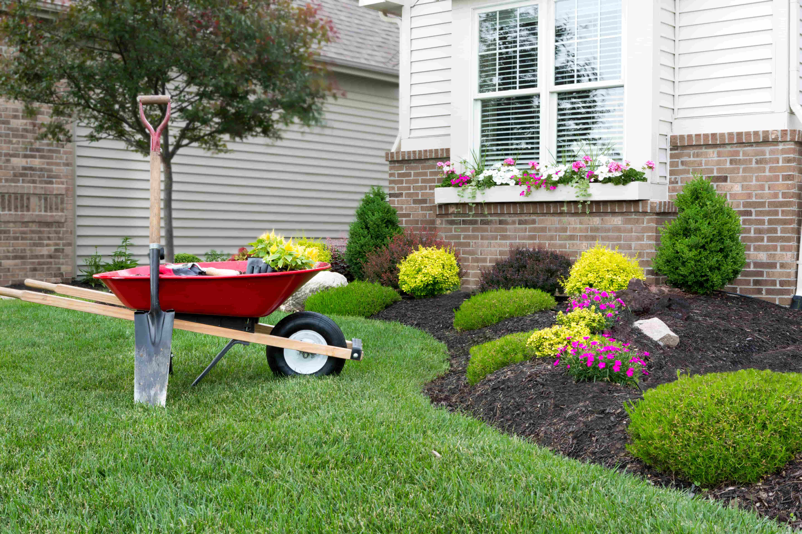

Landscaping & Yard Maintenance
Keep your property looking sharp year-round. We handle mulch, garden beds, seasonal cleanups, and the outdoor upkeep tasks that maintain your curb appeal and protect your landscaping investment across Montgomery County's four distinct seasons.

Year-Round Yard Care for Montgomery County Properties
Maryland's climate puts your yard through a lot — hot, humid summers that accelerate growth, fall leaf dumps that smother beds if they're not cleared, winter freezes that heave mulch and damage borders, and a spring that brings everything back at once. Keeping up with it all takes consistent effort, and that's where Leo General Contracting steps in. We provide the hands-on yard maintenance that keeps your property looking polished between full landscape redesigns.
Whether you need fresh mulch spread across the beds of your Potomac estate, leaf removal and gutter clearing on your Silver Spring colonial, or a complete spring cleanup to get your Bethesda yard ready for the season, we bring the crew, the equipment, and the attention to detail. We work alongside your existing lawn care provider or handle the full scope — whatever your property needs.
check_circle What's Included
- check_circleMulch delivery, spreading, and bed refreshing
- check_circleGarden bed weeding and edging
- check_circleSpring and fall seasonal cleanups
- check_circleLeaf removal and yard debris hauling
- check_circleShrub and hedge trimming
- check_circleGutter cleaning and downspout clearing
- check_circlePower washing — patios, walkways, driveways
Why Choose Us for Your Yard
Seasonal Expertise
We know what Montgomery County yards need in each season — from spring bed prep through fall cleanup — and we time our work so your property always looks its best.
Indoor + Outdoor Contractor
Need mulch outside and a ceiling fan installed inside? We handle both. Having one contractor for indoor and outdoor work saves you time and coordination hassle.
Thorough Cleanup
We don't just spread mulch and leave. We edge beds cleanly, blow walkways and driveways, haul away all debris, and leave your property looking finished — not "in progress."
Recent Landscaping Work
Mulch bed refresh
Spring cleanup
Hedge trimming
Patio power wash
Yard Maintenance Across Montgomery County
Yard Maintenance Questions & Answers
Ready for a Cleaner Yard?
Get a free yard maintenance estimate for your Montgomery County property. Licensed, bonded & insured — MHIC #168342.